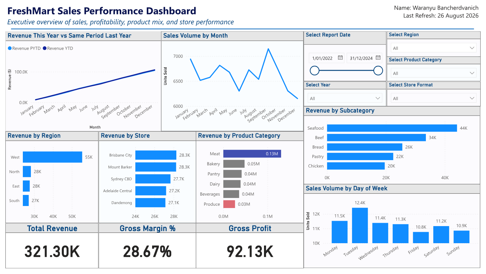

01 / Business intelligence
FreshMart data warehouse and sales dashboard
An end-to-end business intelligence build for a fictional Australian supermarket chain: five raw operational CSVs, audited and cleaned, modelled as a Kimball star schema, and surfaced as an executive dashboard.
in the fact table
before modelling
rather than dropped

The problem
FreshMart sells products to customers across twelve stores, and that activity was scattered across five disconnected operational files. Nobody could answer a question as basic as which regions and categories actually drive profit without manually stitching spreadsheets together — and the raw data was not clean enough to trust if they had.
The data
Five raw CSV extracts, modelled into a single star schema:
- Sales — 17,697 transaction lines, the fact table at the centre
- Customer — demographics, loyalty tier, postcode, membership date
- Product — 60 products with brand, category, subcategory, unit cost
- Store — 12 stores across four regions, with format and floor area
- Promotion — 21 promotions with type, dates, and discount rate
- Date — a generated calendar dimension for time intelligence
Cleaning it first
Every source table was audited in Power Query before it went anywhere near the model. The issues were real, not hypothetical:
- Duplicate customer records sharing a CustomerID with slightly different membership dates — removed by CustomerID
- Product categories spelled inconsistently across records (dairy, Diary, bakery) — standardised via value replacement
- 93 sales rows referencing customer C9999, an ID matching no customer — mapped to "Not Applicable" in a clean column rather than silently dropped
- An N/A promotion type on the no-promotion record — relabelled, with blank dates kept null to preserve the date type
Dropping the 93 orphaned rows would have quietly understated revenue. Mapping them keeps the money in the totals while making the gap visible.
How it was modelled
The warehouse follows Kimball's four-stage method. Business process: retail sales. Grain: one row per product, per customer, per store, per date, per promotion — the most detailed level available, so no future analytical question is closed off. Dimensions: Product, Customer, Store, Promotion, Date. Facts: QuantitySold, UnitPrice, DiscountAmount, COGS.
Facts were classified deliberately: QuantitySold, DiscountAmount and COGS are additive; UnitPrice is non-additive and used only inside calculations, never summed. Getting that distinction wrong is how dashboards end up reporting a nonsense "total unit price".
What the dashboard shows
-
01
Headline KPIs — total revenue, gross profit, and gross margin percentage, so profitability is visible next to volume rather than buried behind it.
-
02
Store revenue by region across South, West, North and East, exposing which regions carry the chain and which lag.
-
03
Revenue by category and subcategory, identifying what actually drives sales versus what merely takes up shelf space.
-
04
Demand patterns by day of week and by month, the view that informs staffing and stock decisions.
-
05
This year versus the same period last year, built with DAX time intelligence so growth is measured against a fair comparison rather than a raw total.
What this demonstrates
- Running a full BI pipeline end to end: design, then clean, then model, then analyse
- Applying a recognised industry method rather than ad-hoc design
- Auditing data quality and documenting every cleaning decision and its justification
- Reasoning about grain and fact additivity — the choices that make a warehouse reusable